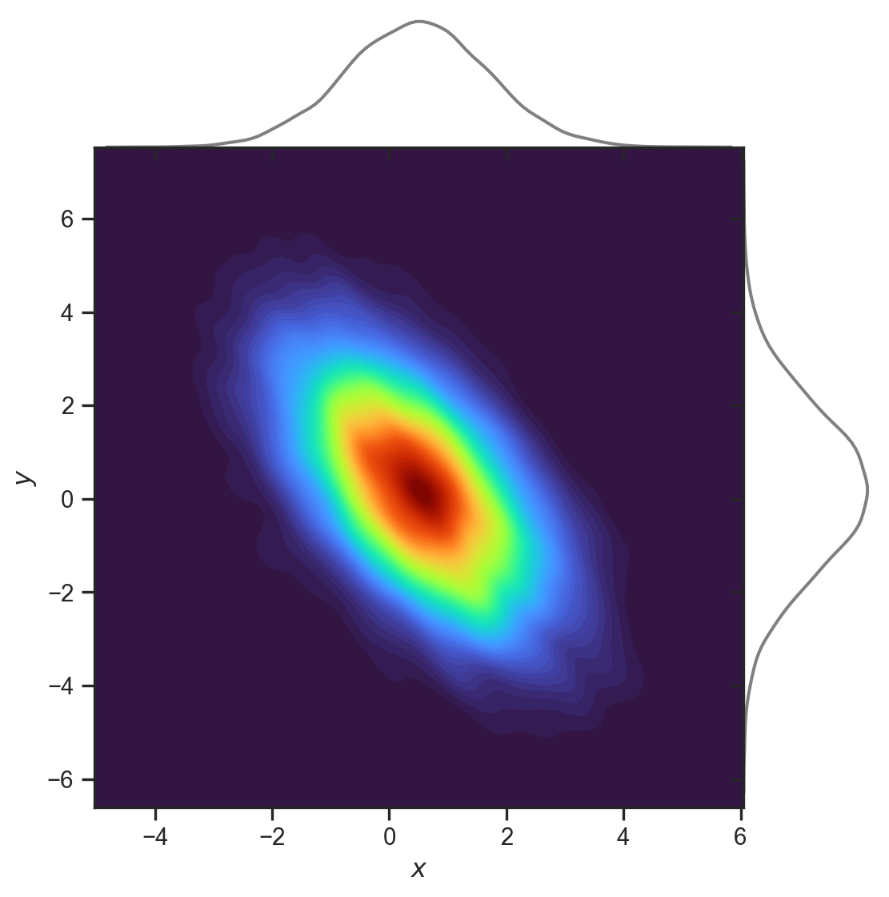
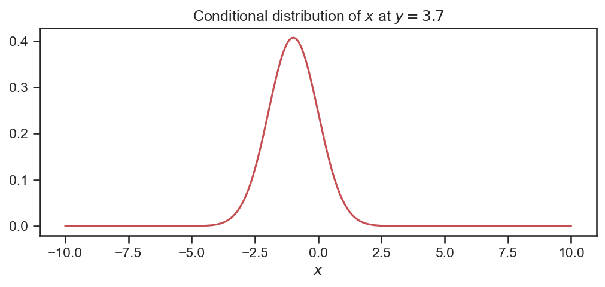

Lecture 5
Multivariate Gaussians
Multivariate Gaussians
Although we have introduced joint probabilities and learnt how to manipulate them in the lectures prior, we have thus far only stuied univariate densities.
In this lecture, we will focus on one multivariate density that sets the stage for our journey into machine learning: the Gaussian distribution!
Multivariate Gaussians
The random vector, \mathbf{X} = \left(X_1, X_2, \ldots, X_n \right) is a multivariate Gaussian \mathbf{X} \sim \mathcal{N} \left( \boldsymbol{\mu}, \boldsymbol{\Sigma} \right) if
f_{\mathbf{X}} \left( \mathbf{x} \right) = \frac{1}{\left( 2 \pi \right)^{n/2}} \left|\boldsymbol{\Sigma} \right|^{-\frac{1}{2}} exp \left(-\frac{1}{2}\left( \mathbf{x}-\boldsymbol{\mu}\right)^{T} \boldsymbol{\Sigma}^{-1} \left( \mathbf{x}-\boldsymbol{\mu}\right) \right)
where
- \boldsymbol{\Sigma} is a n \times n covariance matrix
- \boldsymbol{\mu} = \left( \mu_1, \mu_2, \ldots, \mu_{n} \right)^{T} is a n \times 1 mean vector.
Multivariate Gaussians
Here
\boldsymbol{\mu}=\left(\begin{array}{c} -2\\ 1 \end{array}\right),\Sigma=\left(\begin{array}{cc} 3 & 0\\ 0 & 6 \end{array}\right)
Try adding non-zero entries into the off-diagonal. Note the matrix must be symmetric!
import numpy as np
import matplotlib.pyplot as plt
from scipy.stats import multivariate_normal
from mpl_toolkits.mplot3d import Axes3D
import seaborn as sns
sns.set(font_scale=1.0)
sns.set_style("white")
sns.set_style("ticks")
palette = sns.color_palette('deep')
#Parameters to set
mu_x = -2
variance_x = 3
mu_y = 1
variance_y = 6
#Create grid and multivariate normal
x = np.linspace(-10,10,500)
y = np.linspace(-10,10,500)
X, Y = np.meshgrid(x,y)
pos = np.empty(X.shape + (2,))
pos[:, :, 0] = X; pos[:, :, 1] = Y
rv = multivariate_normal([mu_x, mu_y], [[variance_x, 0], [0, variance_y]])
#Make a 3D plot
fig, ax = plt.subplots(subplot_kw=dict(projection='3d'), figsize=(7,8))
ax.plot_surface(X, Y, rv.pdf(pos),cmap='viridis',linewidth=0)
ax.set_xlabel('$x_1$')
ax.set_ylabel('$x_2$')
ax.set_title(r'Probability density, $f_{\mathbf{X}} (\mathbf{x})$')
plt.close()Multivariate Gaussians
- Remember that \mathbf{X} is a random vector and its possible values \mathbf{x} are also vectors.
- The density, f_{\mathbf{X}} \left( \mathbf{x} \right), is a scalar-valued function.
- The coefficient \frac{1}{\left( 2 \pi \right)^{n/2}} \left|\boldsymbol{\Sigma} \right|^{-\frac{1}{2}} acts as a normalizing constant.
Covariance matrix
- Elements of the covariance matrix have the following form:
\left[ \boldsymbol{\Sigma} \right]_{ij} = \mathbb{E} \left[ \left( X_i - \mu_{i} \right) \left( X_j - \mu_{j} \right) \right] = \mathbb{E} \left[ X_i X_j \right] - \mu_{i}\mu_{j}. \tag{1}
- Following Equation 1 it is clear that the diagonal elements are simply the individual variances:
\left[ \boldsymbol{\Sigma} \right]_{ii} = \mathbb{E} \left[ X^2_i \right] - \mu^2_{i} = Var \left(X_i \right).
- The matrix is symmetric with off-diagonal terms being zero when two components X_i and X_j are independent, i.e., \left[ \boldsymbol{\Sigma} \right]_{ij} = \mathbb{E} \left[ X_i \right] \mathbb{E} \left[ X_j \right] - \mu_{i} \mu_{j} = 0.
Covariance matrix
- When the off-diagonal elements are not zero, i.e., when two components X_i and X_j are related, we can introduce a measure called the correlation coefficient
\rho_{ij} = \frac{\left[ \boldsymbol{\Sigma} \right]_{ij} }{\left( Var\left(X_i \right)Var\left(X_j \right) \right)^{1/2} }.
This values satisfies -1 \leq \rho_{ij} \leq 1, and depending upon the sign it is said to be either negatively correlated or positively correlated.
When \rho_{ij}=0, i.e., when there is no correlation, \left[ \boldsymbol{\Sigma} \right]_{ij}= 0.
Marginal distribution
It can be shown that the marginal density of any component \left(X_1, \ldots, X_n \right) of a multivariate Gaussian is a univariate Gaussian.
To see this, consider that
f_{X_k}\left( x \right) = \int_{-\infty}^{\infty} \ldots \int_{-\infty}^{\infty} f_{\mathbf{X}} \left(\mathbf{x} \right) dx_1 dx_2 \ldots dx_{k-1} dx_{k+1} \ldots dx_{n}
= \frac{1}{\sqrt{2 \pi \left[ \boldsymbol{\Sigma} \right]_{kk} } } exp \left( \frac{\left( x - \mu_{k} \right)^2}{2 \left[ \boldsymbol{\Sigma} \right]_{kk} } \right)
- In practice any partial marginalization of a multivariate Gaussian will yield another multivariate Gaussian (but with reduced dimensions).
Marginal and conditional distribution
Let \mathbf{X} and \mathbf{Y} be jointly Gaussian random vectors with marginals \mathbf{X} \sim \mathcal{N}\left(\boldsymbol{\mu}_{x}, \mathbf{A} \right), \; \; \; \text{and} \; \; \; \mathbf{Y} \sim \mathcal{N}\left(\boldsymbol{\mu}_{y}, \mathbf{B} \right).
We can write the joint distribution as shown below
\left[\begin{array}{c} \mathbf{X}\\ \mathbf{Y} \end{array}\right]\sim\mathcal{N}\left( \underbrace{\left[\begin{array}{c} \boldsymbol{\mu}_{x}\\ \boldsymbol{\mu}_{y} \end{array}\right]}_{\boldsymbol{\mu}}, \underbrace{\left[\begin{array}{cc} \mathbf{A} & \mathbf{C}\\ \mathbf{C}^{T} & \mathbf{B} \end{array}\right]}_{\boldsymbol{\Sigma}}\right)
- The conditional distribution of \mathbf{X} given \mathbf{Y} is
f_{\mathbf{X} | \mathbf{Y}} \left( \mathbf{x}, \mathbf{y} \right) = \mathcal{N} \left( \boldsymbol{\mu}_{x} + \mathbf{CB}^{-1} \left(\mathbf{y} - \boldsymbol{\mu}_{y} \right), \mathbf{A} - \mathbf{CB}^{-1} \mathbf{C}^{T} \right)
- Algebraically, this uses the Schur complement. To explore this further, consider the following schematic.
Marginal and conditional distribution

The joint multivariate Gaussian distribution to the left has mean and covariance:
\boldsymbol{\mu}=\left(\begin{array}{c} 0.5\\ 0.2 \end{array}\right),\Sigma=\left(\begin{array}{cc} 1.5 & -1.27\\ -1.27 & 3 \end{array}\right)
As an example, we wish to work out what f_{X| Y} \left( x, y=3.7 \right) is (see code).
The conditional is Gaussian!

import numpy as np
import matplotlib.pyplot as plt
from scipy.stats import multivariate_normal, norm
import pandas as pd
import seaborn as sns
sns.set(font_scale=1.0)
sns.set_style("white")
sns.set_style("ticks")
palette = sns.color_palette('deep')
var_1 = 1.5
var_2 = 3.0
rho = -0.6
off_diag = np.sqrt(var_1 * var_2) * rho
mu = np.array([0.5, 0.2])
cov = np.array([[var_1, off_diag], \
[off_diag, var_2]])
rv = multivariate_normal(mu, cov)
# Generate random samples from this multivariate normal (largely for plotting!)
data = rv.rvs(8500)
df = pd.DataFrame({'$x$': data[:,0].flatten(), '$y$': data[:,1].flatten()})
# Now, to plot the conditional distribution of $X_1$ at $X_2=5.0$, we would have
def calculate_conditional(mu, cov, yy):
new_mu = mu[0] + cov[0,1] * (cov[1,1])**(-1) * (yy - mu[1])
new_var = cov[0,0] - cov[0,1] * (cov[1,1])**(-1) * cov[0,1]
return new_mu, new_var
y_new = 3.7
cond_mu, cond_var = calculate_conditional(mu, cov, y_new)
# Now, to plot the conditional distribution of $X_1$ at $X_2=5.0$, we would have
def calculate_conditional(mu, cov, yy):
new_mu = mu[0] + cov[0,1] * (cov[1,1])**(-1) * (yy - mu[1])
new_var = cov[0,0] - cov[0,1] * (cov[1,1])**(-1) * cov[0,1]
return new_mu, new_var
y_new = 3.7
cond_mu, cond_var = calculate_conditional(mu, cov, y_new)
X_samples = np.tile( np.linspace(-10, 10, 200).reshape(200,1) , (1, 2))
X_samples[:,1] = X_samples[:,1]* 0 + y_new
f_X = rv.pdf(X_samples)
rv2 = multivariate_normal(cond_mu, cond_var)
f_X1 = rv2.pdf(X_samples[:,0])
# Plot!
g = sns.JointGrid(data=df, x="$x$", y="$y$", space=0)
g.plot_joint(sns.kdeplot, fill=True, cmap="turbo", thresh=0, levels=100)
g.plot_marginals(sns.kdeplot, color="grey", gridsize=100)
plt.close()
fig = plt.figure(figsize=(8,3))
plt.plot(X_samples[:,0], f_X1, 'r-')
plt.xlabel('$x$')
plt.title('Conditional distribution of $x$ at $y=3.7$')
plt.close()Generating samples
It will be useful to generate samples from a multivariate Gaussian. To understand how to do this, consider the following setup.
Let \mathbf{X} \sim \mathcal{N} \left(\mathbf{0}, \mathbf{I}\right). Thus, \mathbb{E} \left[ \mathbf{X} \right] = \mathbf{0}, and Cov\left[ \mathbf{X} \right] = \mathbf{I}.
Now consider the map given by \tilde{\mathbf{x}} = \mathbf{S} \mathbf{x} + \mathbf{b}, where \mathbf{x} is a particular value from the random variable \mathbf{X}, where
- \mathbf{S} \in \mathbb{R}^{n \times n} is a matrix;
- \mathbf{b} \in \mathbb{R}^{n} is a vector.
By linearity of the expectation we can show that
\mathbb{E} \left[ \tilde{\mathbf{X}} \right] = \mathbf{b}, \; \; \; \text{and} \; \; \; Cov \left[ \tilde{\mathbf{X}} \right] = \mathbf{SS}^{T}.
The distribution \mathcal{N}\left( \mathbf{b}, \mathbf{SS}^{T} \right) is valid (i.e., it is Gaussian), only if \mathbf{S} is non-singular, i.e., \mathbf{SS}^{T} is positive definite.
In practice, if we need to generate samples from \mathcal{N}\left( \mathbf{b}, \mathbf{B} \right), we would compute the Cholesky decomposition of \mathbf{B}= \mathbf{LL}^{T}, and then use \tilde{\mathbf{x}} = \mathbf{b} + \mathbf{L} \mathbf{x}.

AE8803 | Gaussian Processes for Machine Learning